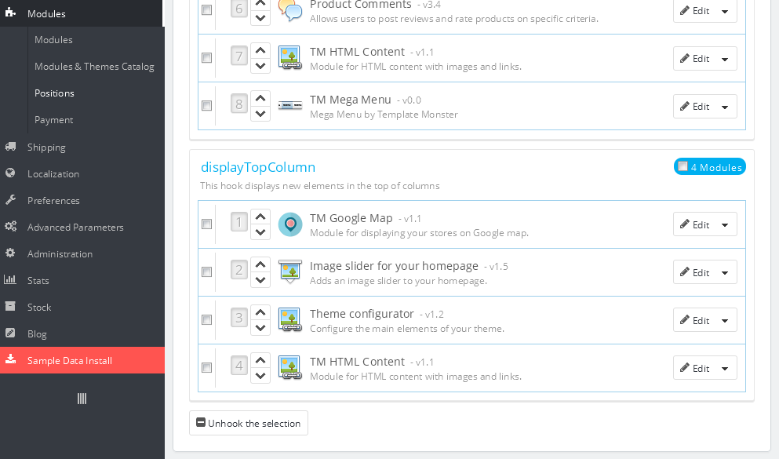

Introducción
¿Qué es el comercio electrónico PrestaShop?
PrestaShop es una solución de comercio electrónico gratuita para el kernel básico y de código abierto. Es compatible con servicios de pago como Google Checkout, PayPal o pagos mediante el uso de APIs.
PrestaShop está disponible bajo licencia de software abierto y fue lanzado oficialmente en agosto de 2007 para PYMES (pequeñas y medianes empresas pequeñas. El software que está basado en el motor de plantillas Smarty es utilizado por miles de tiendas en todo el mundo.
¿Qué es la plantilla de PrestaShop?
La plantilla de PrestaShop es un tema para la solución de comercio electrónico PrestaShop. Le ofrece una gran variedad de posibilidades de personalización y le permite crear una tienda en línea que cumpla plenamente sus necesidades.
Estructura de archivos
El paquete de la plantilla que ha descargado tiene varias carpetas. Veamos lo que cada una contiene:
- screenshots - contiene capturas de pantalla de la plantilla. No es para producción
- sources.zip - contiene los archivos de código fuente de la plantilla
- sources
- psd - archivos de código fuente de Adobe Photoshop para la plantilla (.psd)
- sources
- theme - contiene los archivos del tema de PrestaShop
- manual_install - contiene los archivos para la instalación manual
- img - imágenes para la instalación manual
- modules - módulos para la la instalación manual
- themes - archivos del tema para la la instalación manual
- dump.sql - archivo de datos de muestra para la instalación manual
- sample_data - Contiene los archivos usados para la instalación de datos de muestra con el módulo sampledatainstall
- themeinstallator - contiene un archivo para la instalación automática del tema
- theme####.zip - archivo de tema. Contiene todos los archivos del tema. Se instala utilizando el método de instalación estándar de PrestaShop
- manual_install - contiene los archivos para la instalación manual
- fonts_info.txt - contiene enlaces para descargar las fuentes utilizadas en la plantilla
- info.txt - contiene instrucciones sobre la extracción de los archivos de código fuente
Primeros pasos
Preparación
Antes de seguir con la configuración de su comercio electrónico de PrestaShop, por favor asegúrese de que está totalmente preparado. Por favor, realice los siguientes pasos de preparación:
Software de edición
Para sentirse cómodo trabajando con su plantilla de PrestaShop, le recomendamos que descargue todas las aplicaciones necesarias. Puede ver la lista de software necesario en la página de vista previa de plantilla. Los requisitos pueden variar dependiendo de la plantilla, por norma general usted necesita:
- En primer lugar, usted necesita las aplicaciones adecuadas para extraer el archivo sources_#########.zip que está protegido por contraseña. Puede utilizar WinZip 9+ (Windows) y Stuffit Expander 10+ (Mac).
- Usted también podría necesitar la aplicación Adobe Photoshop. Se utiliza para editar los archivos de código fuente .PSD, es necesaria si desea editar los gráficos e imágenes de la plantilla.
- Para editar los archivos de código fuente de la plantilla, necesitas algún editor de código como Adobe Dreamweaver, Notepad++, Sublime Text, etc.
- Para cargar archivos en el servidor de alojamiento, es posible que necesite un Gestor FTP como Total Commander, FileZilla, CuteFTP, etc.
Requisitos del servidor
Por favor, asegúrese de que su servidor de alojamiento cumple con los requisitos de PrestaShop:
- Sistema: Unix, Linux o Windows. Se recomienda Unix.
- Servidor web: Apache 1.3 o superior, IIS 6.0 de Microsoft o superior, y nginx 1.0 o superior.
- PHP 5.2* o superior.
- MySQL 5.0 o superior.
- Al menos 32 Mb de memoria RAM en el servidor (64 Mb es mejor, en realidad, cuanto más mejor).
PrestaShop funcionará con PHP 5.1 o superior, pero las versiones anteriores a la 5.2 tienen errores que podrían hacer que algunas caracterísitcas no funcionen correctamente (como la validación de fechas).
Usando el servidor local
Puede ejecutar PrestaShop localmente en su ordenador con el servidor local. Para crear un servidor de alojamiento local, por favor, utilice las aplicaciones de localhost, como WAMP, AppServ, XAMP, etc. Cualquiera de ellas se puede instalar fácilmente y se utilizan para ejecutar PrestaShop.
Por favor, consulte los tutoriales a continuación sobre cómo configurar un entorno de desarrollo local:
Descargando
Para instalar PrestaShop necesita descargar el paquete del motor de PrestaShop desde el sitio web oficial en www.prestashop.com/en/downloads
Sólo tiene que insertar su nombre y correo electrónico en el cuadro de descarga y hacer clic en el botón 'Descargar'.
Por favor, asegúrese de que su versión del motor de PrestaShop coincide con los requisitos de la plantilla. Todas las versiones de PrestaShop están disponibles en SourceForge.
Extracción de archivos
Una vez que el paquete del motor PrestaShop es descargado, tendrá que extraer sus archivos y carpetas.
Esto se puede hacer con cualquier gestor de archivos como WinZip(PC), StuffitExpander(MAC), etc.
Por favor, consulte los siguientes tutoriales sobre cómo extraer el contenido de los archivos comprimidos con WinZip(PC) y StuffitExpander(MAC).
Tenga en cuenta: si su panel de control de hosting tiene la opción de 'Extraer' archivos, usted puede utilizarla para extraer los archivos directamente en el servidor después de que se ha cargado el archivo .zip.
Carga de los archivos del motor de PrestaShop
Si ha extraído los archivos de forma local en el equipo, tendrá que subirlos a su servidor de alojamiento.
Esto se puede hacer mediante el panel de control del hosting o utilzando un Gestor de FTP de terceros como FileZilla, TotalCommander, CuteFTP, etc.
Puede echar un vistazo al video tutorial detallado sobre cómo subir archivos al servidor mediante un gestor de FTP and cómo subir archivos a un servidor utilizando cPanel (WebHost Manager, WHM).
Instalación del motor de PrestaShop
Cuando haya terminado de cargar los archivos, puede iniciar la instalación del motor de PrestaShop. Abra su navegador Web y escriba el 'nombre del dominio/ruta a la carpeta de PrestaShop' en la barra de direcciones, a continuación, vuelva a cargar la página. Debería ver la pantalla de bienvenida. Por favor, siga las siguientes instrucciones para instalar PrestaShop.
Paso 1: Asistente de Instalación (Elija el idioma)
Por favor seleccione el idioma de instalación
Tenga en cuenta: La opción de instalación de idioma no cambiará el idioma de su tienda. Por defecto PrestaShop se ofrece en Inglés. Puede instalar los paquetes de traducción adicionales para cambiar el idioma de la tienda.

Cuando haya terminado, haga clic en el botón 'Siguiente'.
Paso 2: Asistente de Instalación (acuerdos de licencia)
Por favor, consulte el contrato de licencia.

Cuando haya terminado, haga clic en el botón 'Siguiente'.
Paso 3: Compatibilidad del Sistema
Compruebe la configuración de PHP y los permisos del directorio. En caso de cualquier error, por favor póngase en contacto con su proveedor de hosting para obtener más ayuda.

Si todo es correcto, haga clic en el botón 'Siguiente'.
Paso 4: Configuración de la tienda
Este paso requiere que introduzca los ajustes de la tienda como el nombre de Tienda, la actividad, el país, la zona horaria, etc.
Todos estos ajustes se pueden cambiar más adelante en el panel de administración de PrestaShop.

Paso 5: Configuración del Sistema
Si ya tiene una base de datos de MySQL, por favor indique los detalles de de la base de datos en los campos correspondientes.
Si no los sabe usted puede conseguir los detalles de la base de datos desde el panel de control de hosting o poniéndose en contacto con su proveedor de hosting.

Cuando haya terminado, haga clic en el botón 'Siguiente'.
Paso 6: La instalación está completa
Este es el paso final de la instalación.

Por razones de seguridad es necesario eliminar la carpeta /install/ del servidor de alojamiento.
Desde la versión 1.5.4, PrestaShop se encarga de cambiar el nombre de la carpeta de administración por ti: usa la palabra "admin" y añade 4 dígitos al azar, es decir, por ejemplo "admin8814." El cambio de nombre se produce cuando llega a la carpeta "admin" por primera vez: PrestaShop cambiará el nombre y luego accederá a la carpeta renombrada.
Inicie sesión en el panel de administración de PrestaShop para ir a la carpeta "admin" recién renombrada y empiece a llenar el catálogo con sus datos.
Inicie sesión en el panel de administración de PrestaShop para ir a la carpeta "admin" recién renombrada y empiece a llenar el catálogo con sus datos.
Si se encuentra con algún problema, por favor compruebe el manual de instalación oficial de PrestaShop.
Instalación de la plantilla
1. Importación del tema
Nota: este método no ofrece la instalación de los datos de muestra.
1. Preparación de la plantilla.
Antes de continuar, por favor asegúrese de que usted ha descargado la plantilla y ha extraído los archivos. Puedes consultar tutoriales detallados sobre cómo extraer archivos del paquete de la plantilla mediante WinZip and StuffitExpander.
Cuando haya extraído los archivos puede proceder a subir la plantilla.
2. Instalación.
Acceda a su panel de administración de PrestaShop y vaya a Preferencias -> Temas. En la parte superior de la página haga clic en el botón Añadir un nuevo tema.

Haga clic en el botón Añadir archivo en Importar desde el apartado de su ordenador. Vaya al paquete de la plantilla que ya ha descomprimido y abra la carpeta themeinstallator.
Seleccione el archivo .zip del tema y haga clic en Guardar.

Se iniciará el proceso de carga. Verá el mensaje de que el tema se ha subido correctamente. Una vista previa del nuevo tema aparecerá en la lista de temas instalados.

Para activar el tema, pase el cursor sobre el icono de la vista previa del tema y haga clic en Usar este tema.

Debería ver la pantalla con la información de los módulos utilizados por el tema, el número de módulos que están activados y desactivados. Haga clic en Guardar para continuar.

Después de esto, verá la ventana emergente con el mensaje sobre la activación exitosa del tema: el tema se ha instalado correctamente, las imágenes se han ajustado a las dimensiones del tema. Para terminar la instalación haga clic en el botón Finalizar .

2. Instalación automática con los datos de demostración (instalador de datos de muestra)
Después de instalar los datos de demostración, tendrás tu tienda de PrestaShop justo igual que en la plantilla de demostración en línea. Contendrá todos los productos de demostración, categorías, módulos y configuración de la tienda.
Por favor, no use los de datos de muestra para su sitio web en funcionamiento! Esto reemplazará todos sus productos y ajustes de la tienda.
Por favor, asegúrese que la versión del motor de PrestaShop coincide con la versión especificada en la pestaña Technical Details como PrestaShop Engine: 1.X.X.X
También, asegúrese que el prefijo de la base de datos es ps _. Sólo si el motor de PrestaShop coincide con la versión especificada, instalar los datos de ejemplo.
Para instalar los datos de muestra utilizando el instalador de los datos de demostración, por favor, siga las instrucciones del paso 1 (Importación del tema) de este manual. Luego, en el panel de administración de la tienda verás el módulo para instalar los datos de demostración.
Usando este módulo puede instalar fácilmente los datos de muestra de la tienda en unos pocos y sencillos pasos. Por favor, haga lo siguiente:
-
En el menú del panel de administración haga clic en la opción "Instalar Tienda de Demostración".

-
Seleccione y cargue los archivos de datos de ejemplo desde la carpeta 'sample_data' que se encuentra en el paquete de la plantilla. Puede hacerlo utilizando el botón "Examinar archivos locales" o arrastrando los archivos de datos de muestra a la ventana del navegador.

-
Espere hasta que los archivos se carguen.

-
Luego haga clic en el botón "Continuar Instalación".

-
Then Sample data installer will automatically configure your store and other modules. This can take several minutes.

-
Cuando los datos de la demostración se hayan instalado correctamente, es necesario realizar el último paso - regenerar las imágenes. Haga clic en el botón "Ir a la página Regenerar".

-
Para volver a generar las imágenes haga clic en el botón "Regenerar miniaturas".

3. Instalación manual de la plantilla con los datos de muestra
Después de instalar los datos de demostración, tendrás tu tienda de PrestaShop justo igual que en la plantilla de demostración en línea. Contendrá todos los productos de demostración, categorías, módulos y configuración de la tienda.
Por favor, no use los de datos de muestra para su sitio web en funcionamiento! Esto reemplazará todos sus productos y ajustes de la tienda.
Por favor, asegúrese que la versión del motor de PrestaShop coincide con la versión especificada en la pestaña Technical Details como PrestaShop Engine: 1.X.X.X
También, asegúrese que el prefijo de la base de datos es ps _. Sólo si el motor de PrestaShop coincide con la versión especificada, instalar los datos de ejemplo.
1. Cargar los archivos de la plantilla
Para cargar la plantilla a su servidor:
- Abra el paquete de la plantilla.
- A continuación, vaya a la carpeta /theme/manual_install/.
- Cargue las carpetas /img/, /modules/ y /themes/ al directorio raíz de PrestaShop.
Puede revisar el video tutorial detallado sobre cómo subir archivos al servidor mediante el gestor de FTP and cómo subir archivos a un servidor utilizando cPanel (WebHost Manager, WHM).
2. Instalar los datos de ejemplo
Los datos de muestra se proporcionan como un archivo .SQL. Se encuentra en la carpeta theme/manual_install/ del paquete de la plantilla y se llama dump.sql.
El archivo dump.sql puede ser instalado utilizando la herramienta phpMyAdmin o alguna otra herramienta de gestión de base de datos en su panel de control de hosting. Este tutorial detallado sobre cómo instalar archivos de SQL puede ayudarle.
Antes de continuar, por favor haga una copia de seguridad de su base de datos. Puede revisar el video tutorial detallado sobre cómo hacer copia de una base de datos.
Por favor, asegúrese de que su versión del motor de PrestaShop coincide con los requisitos de la plantilla. De lo contrario, la base de datos se dañará.
Cuando haya terminado con la instalación del archivo dump.sql, tendrá que activar la plantilla.
Desde el panel de administración de PrestaShop, vaya a Preferencias > Temas, seleccione la plantilla en la sección Temas y haga clic en Guardar.
3. Añadiendo idiomas a la tienda.
Después de que la plantilla en varios idiomas haya sido instalada, usted será capaz de añadir todos los idiomas disponibles en ella (inglés, francés, español, alemán, ruso). Puede hacerlo de esta manera:
Vaya a 'Localización > Traducciones' en el panel de administración, encuentre 'AÑADIR/ACTUALIZAR IDIOMA' y agregue idiomas seleccionándolos en el menú desplegable (1) y haga clic en el botón 'Añadir o actualizar un idioma' (2).

Si no quiere tener algunos idiomas, puede eliminarlos (2) o desactivarlos (1) en el menú 'Localización > Idiomas'.

4. Instalación de la plantilla sobre una tienda existente
Usted puede usar este método de instalación si ya tiene un sitio web funcionando con PrestaShop y sólo quiere instalar una nueva plantilla.
1. Cargar los archivos de plantilla y la activar el tema
- Abra el paquete de la plantilla.
- Luego, vaya a la carpeta /theme/manual_install/.
- Cargue las carpetas /modules/ y /themes/ al directorio raíz de PrestaShop.
Puede comprobar el video tutorial detallado sobre cómo subir archivos al servidor mediante el gestor de FTP and cómo subir archivos a un servidor utilizando cPanel (WebHost Manager, WHM).
-
En su panel de administración de PrestaShop vaya a Preferencias > Temas, seleccione el tema que ha instalado (también puede utilizar el tema que está habilitado, esto no causará ningún problema para su tema actual). Haga clic en el botón Configuración avanzada .

-
En la pantalla mostrada seleccione el directorio con el nuevo nombre del tema y haga clic en el botón Guardar.

2. Instalación de módulos
Cada plantilla está provista con algunos ajustes específicos para los módulos. Para hacer que los módulos aparezcan igual que en la demostración, deberá configurarlos. Todos los módulos se pueden configurar en el panel de administración de PrestaShop.
1. En su panel de administración de PrestaShop, seleccione Módulos > Módulos en el menú principal.
En la página de módulos se puede ver la lista de módulos disponibles de PrestaShop. Puede que tenga que instalar algunos de ellos.
Para instalar un módulo, búsquelo en la lista y haga clic en el botón 'Instalar'.

Utilizando los enlaces del módulo pueden activarlos o desactivarlos (enlaces Activar|Desactivar), restablecer sus ajustes por defecto (enlace Restablecer), eliminar un módulo (enlace Eliminar) o configurarlo (enlace Configurar).

2. Después de activar los módulos necesarios, tiene que asignarlos para corregir posiciones.
En el panel de administración de PrestaShop, seleccione Módulos > Posiciones en el menú superior. Para poner un módulo en la posición requerida, simplemente arrastre a la sección de posición de la lista de módulos.

3. Configuración de las imágenes
En PrestaShop puede utilizar tamaños de imagen predefinidas para las imágenes de productos, categorías, fabricantes, etc.
Por ejemplo, las dimensiones de las imágenes de 'home' se utilizan generalmente para las imágenes del producto en los listados por categoría, 'large' para la imagen principal del producto en la página de información del producto.
Para configurar las dimensiones de imagen de los productos, abrir su panel de administración de PrestaShop, vaya a Preferencias > Imágenes y establezca las dimensiones de imagen como se describe en Página de configuración en la plantilla de demostración.
Tutoriales básicos
1. Cómo cambiar el nombre de la tienda
Para cambiar el título de su tienda, abra el panel de administración de PrestaShop y vaya a Preferencias > Contactos de la tienda, y a la sección Datos de contacto .
En el ampo Nombre de la tienda, escriba su nombre de la tienda y haga clic en el botón Guardar para guardar los cambios.

2. Como editar el control deslizante
Para editar las imágenes del control deslizante, encuentre el módulo Control deslizante para su página de inicio en la página Módulos de su tienda de PrestaShop. Se encuentra ubicado en la sección Características de Front Office del módulo. Haga clic en el botón Configurar para editar el módulo.

En la página de ajustes del módulo puede cambiar las opciones del control deslizante (como el ancho, la velocidad, etc.) y editar las diapositivas (imágenes, URLs, descripciones, etc.).

Módulos personalizados y extensiones
Blog Inteligente
Blog Inteligente - un conjunto de módulos que permite la creación de blogs en su tienda. Se compone de los siguientes módulos: Blog Inteligente, Fuentes RSS del Blog Inteligente, Archivo del Blog Inteligente, Categorías del Blog Inteligente, Últimas Noticias del Blog Inteligente, Últimos Comentarios del Blog Inteligente, Módulo AddThis del Blog Inteligente, Mensajes Populares del Blog Inteligente, Últimos Mensajes del Blog Inteligente, Articulos relacionados del Blog Inteligente, Busqueda del Blog Inteligente, Etiquetas del Blog Inteligente. Tiene sus anclas donde los módulos del blog pueden mostrarse en el sitio, también pueden aparecer en las anclas estándar (sólo en columnas).
Blog Inteligente
Este es el módulo principal, contiene muchos ajustes para la funcionalidad del blog. Después de su instalación aparecerá la pestaña Blog en el menú principal del panel de administración donde podrá añadir/eliminar/editar los mensajes/categorías o seleccionar el tipo de imágenes y sus dimensiones utilizado en los puestos (los tipos y dimensiones de las imágenes de los mensajes son diferentes a las imágenes de los productos de la tienda). Para agregar la configuración frontend del módulo, por favor vaya a Blog Inteligente (Módulos->Características de Front Office->Blog Inteligente) y añada todos los parámetros.

Descripción de los parámetros:
- Meta Title - el título de su blog que se mostrará en todas sus páginas.
- Meta Keyword - palabras clave que serán utilizadas por los motores de búsqueda para una mejor optimización SEO.
- Meta Description - descripción de tu blog utilizada por los motores de búsqueda para una mejor optimización SEO.
- URL principal del Blog - la URL de tu Blog.
- Usar .html con Urls amigables - activar/desactivar añadir .html a las páginas del blog utilizando URLs amigables.
- Número de mensajes por página - número de mensajes que se muestran por página (páginas de categorías/archivos, etc.).
- Aceptar comentarios automáticamente - activar/desactivar los comentarios de otros usuarios aceptados automáticamente, si está activado, los comentarios estarán disponibles sin un administrador de moderación.
- Activar Captcha - activar/desactivar Captcha debajo del formulario Dejar comentario en las páginas de productos.
- Activar comentarios - activar/desactivar dejar comentarios por parte de los usuarios.
- Mostrar nombre de autor - activar/desactivar mostrar autor de mensajes en las páginas del blog y páginas individuales
- Mostrar páginas vistas - activar/desactivar el número de veces que los usuarios vieron el mensaje. Se mostrará debajo del mensaje en las páginas del blog y páginas individuales.
- Estilo del nombre de autor - cambiar el formato del nombre del autor.
- Imagen del AVATAR: - añadir la imagen del avatar estándar para todos los usuarios.
- Mostrar sin imagen - activar/desactivar la imagen. Sin imagen se activa si no hay ninguna imagen para el mensaje/categoría, etc.
- Mostrar Categoría - activar/desactivar la imagen de la categoría y la descripción en las páginas de categorías del blog.
- Configuración de columnas de la página del blog - configura la visualización de los módulos de blog relacionados. A menudo necesita ajustes adicionales por lo que se recomienda instalarlos de la misma manera que los módulos estándar de PrestaShop.
- CSS personalizado - puede añadir estilos adicionales en este campo. Tenga cuidado con las clases que ya se utilizan en el tema, ya que pueden producirse algunos conflictos.
- Elimnar el antiguo Thumblr - se utiliza para regenerar las imágenes del blog en caso de que hayan sido cambiadas o se hayan añadido nuevos tipos de imagen. Para regenerarlas, seleccione Si y haga click en Regenerar.
SOLO DESPUÉS DE ESTO otros módulos de blogs relacionados se pueden instalar. El proceso de eliminación es el contrario EN PRIMER LUGAR, ES NECESARIO ELIMINAR TODOS LOS MÓDULOS RELACIONADOS y sólo a continuación, elimine el módulo del Blog inteligente.
Fuentes RSS del Blog Inteligente
Es el módulo que genera el nuevo feed de tu blog.

Tiene varias opciones de configuración en el panel de administración:
- Período de actualización - permite visualizar mensajes en un período de tiempo específico (horas/días/semanas/meses/años).
- Frecuencia de actualización - permite configurar la frecuencia de actualización (1 semana, 2 horas, etc.).
En la parte superior hay una dirección donde se generan las noticias. Consiste en la URL del sitio web + /modules/smartblogfeed/rss.php.
Archivo del Blog Inteligente
Este bloque aparece en la columna de la izquierda/derecha y se usa para ordenar los mensajes por período de tiempo (meses) .
No tiene ningún ajuste adicional.
Categorías del Blog Inteligente
Este bloque aparece en la columna de la izquierda/derecha y se usa para ordenar los mensajes por categoría.
No tiene ningún ajuste adicional.
Últimas Noticias del Blog Inteligente
Este bloque aparece sólo en homepagecontent y se utiliza para mostrar todos los mensajes en la página principal.

Ajustes:
- Número de mensajes que se mostrarán en Últimas Noticias - número de mensajes que se mostrarán en la página principal.
Últimos Comentarios del Blog Inteligente
Este bloque aparece en la columna de la izquierda/derecha y se utiliza para mostrar los últimos comentarios añadidos en los mensajes de blog.

Ajustes:
- Número de comentarios a mostrar - número de comentarios que se muestran en el bloque.
Módulo AddThis del Blog Inteligente
Este bloque aparece en la página simple y permite compartir este mensaje en las redes sociales.
No tiene ningún ajuste adicional.
Mensajes Populares del Blog Inteligente
Este bloque aparece en la columna de la izquierda/derecha y se utiliza para mostrar los mensajes más populares.

Ajustes:
- Número de mensajes populares a mostrar - número de mensajes populares que se muestran en el bloque.
Últimos Mensajes del Blog Inteligente
Este bloque aparece en la columna de la izquierda/derecha y se utiliza para mostrar los últimos mensajes.

Ajustes:
- Número de mensajes recientes a mostrar - número de mensajes recientes a mostrar en el bloque.
Articulos relacionados del Blog Inteligente
Este bloque aparece en la página de entrada y se utiliza para mostrar los mensajes relacionados.

Ajustes:
- Número de mensajes relacionados a mostrar - número de mensajes relacionados a mostrar en el bloque.
Busqueda del Blog Inteligente
Este bloque aparece en la columna de la izquierda/derecha y se utiliza para buscar a través del blog.
No tiene ningún ajuste adicional.
Etiquetas del Blog Inteligente
Este bloque aparece en la columna de la izquierda/derecha y se utiliza para mostrar las etiquetas utilizadas en el blog.

Ajustes:
- Número de etiquetas a mostrar - número de etiquetas a mostrar en el bloque.
TM Mega Menú
El módulo está diseñado para crear menús complejos. El módulo ofrece la posibilidad de mostrar un solo elemento (sin submenú), un elemento de menú con un submenú y un elemento de menú con el submenú por medio de una multi-línea y bloque de varias columnas. El módulo se puede utilizar en diferentes posiciones, pero mostrará el mismo contenido. Puede agregar categorías (con subcategorías), categorías CMS (con subcategorías), fabricantes (uno o la lista), proveedores (uno o la lista), tiendas (si se utiliza multistore), enlaces a cualquier producto, bloque de información del producto, enlaces personalizados no están limitados en cantidad, bloques personalizados de HTML no están limitados en número, y banners. Ver abajo para más detalles.
TM Mega Menú Fichas
Las fichas de TM Mega Menú son los elementos básicos que son la parte superior del menú.

Para crear una nueva pestaña, abra el módulo TM Mega Menú y haga clic en + en la lista de la tabla de las fichas.

En el formulario que aparece, rellene los campos obligatorios.

- Escriba el nombre de la ficha (Enter tab name) - el título de la ficha que es obligatorio de rellenar para el idioma por defecto, si no se rellenan campos para idiomas adicionales, la ficha recibe el nombre del idioma por defecto. El campo es obligatorio.
- Activo (Active) - la ficha activar/inactivar.
- Enlace (Link) - un enlace que se asigna a esa ficha. Puede introducir un enlace personalizado, o elegir entre las opciones existentes (categorías, CMS categorías). Si este campo se deja en blanco, el enlace en esta ficha estará inactivo.
- Orden (Sort order) - ordenar la visualización de las fichas.
- Clase Específica (Specific Class) - clase que se añade al elemento para resaltarlo (CSS class).
- Introduzca el distintivo de la ficha (Enter tab badge) - se llena en función de multi-idiomas.
- Este es el Mega Menú (It is Mega Menu) - dada la ficha de submenú es el Mega Menú. *
- Utilizando el menú simple (Use simple menu) - dada la ficha de submenú es el menú simpe. **
* Este es el Mega Menú. Si se selecciona esta opción, habrá un formulario para crear menú complejo (Mega Menú).
El menú complejo consta de filas y columnas en líneas.
La Línea es una parte de la estructura de Mega Menú. Incluye las columnas del menú. La línea existente se puede eliminar haciendo clic en el botón apropiado. La línea se elimina con el contenido que incluye. La cantidad de líneas no se limita.
La columna es parte de la estructura del Mega Menú, colocado en el interior de las líneas. (La Clase) La anchura de la columna no puede ser inferior a 2 y superior a 12. Para mostrar el menú correctamente, la anchura total de las columnas no debe ser superior a 12. La anchura (clase) es un tipo de columna Bootstrap, corresponde a los mismos valores.
Para crear el menú, haga clic en Agregar línea (Add row)

Apareció en el formulario, haga clic en la opción Agregar Columna (Add column)

En la ventana pop up que aparece, usted debe especificar la clase de la columna (de 2 a 12). La propia columna aparece a continuación aquí usted tiene que fijar los parámetros necesarios,

usted puede cambiar la clase de columna, añadir clase CSS, y también el contenido requerido de la lista proporcionada. Usted puede añadir / eliminar contenido haciendo doble clic sobre el elemento deseado, o resaltando los elementos necesarios y haciendo clic en el botón correspondiente.
El bloque se puede eliminar haciendo clic en el botón Eliminar el bloque de pie de página del bloque.
Mediante la eliminación de la línea, también se eliminan las columnas incluidas.
** Utilizando el menú simple. Si se selecciona esta opción, habrá un formulario para crear un menú simple. Se trata de un menú que muestra el contenido seleccionado en una sola columna. Si el artículo tiene el contenido integrado, se añade la nueva columna.

Para mover el contenido disponible al menú seleccionado, haga doble clic o resalte el contenido deseado y pulse el botón correspondiente.
La información del menú inactivo se guarda al cambiar entre los tipos de menú y siempre se puede cambiar el tipo de menú.
TM Mega Menú HTML
En esta sección, vamos a explicar cómo crear un bloque personalizado HTML en el Mega Menú.
El módulo tiene una tabla de todos los bloques disponibles a la que puede añadir un nuevo bloque haciendo clic en el botón + en la parte superior derecha de la tabla.
En el formulario que aparece, rellene los campos obligatorios.

- Introduzca el nombre del elemento HTML (Enter HTML item name) - el nombre del bloque HTML, es obligatorio rellenar para el idioma por defecto.
- Clase espacífica (Specific class) - la clase CSS del bloque.
- Contenido HTML (HTML content) - contenido HTML.
Bloque añadido aparecerá en la lista de bloques, igual que en la lista de contenido disponible durante la creación de los bloques de menú.
TM Mega Menú Enlaces
En esta sección, vamos a explicar cómo crear enlaces personalizados en el Mega Menú.
El módulo tiene una tabla de todos los enlaces disponibles a la que puede añadir un nuevo enlace haciendo clic en el botón + en la parte superior derecha de la tabla.
En el formulario que aparece, rellene los campos obligatorios.

- Introduzca el nombre del enlace (Enter Link name) - el nombre del enlace, es obligatorio rellenar para el idioma por defecto.
- Introduzca URL de Enlace (Enter Link URL) - URL de enlace, es obligatorio rellenar para el idioma por defecto.
- Clase espacífica (Specific class) - la clase CSS del bloque.
- Abrir en una nueva ventana (Open in new window) - abrir el enlace en una nueva ventana.
Enlace agregado aparece en la lista de enlaces, igual que la lista de contenidos es disponible durante la creación de los bloques de menú.
TM Mega Menú Banners
En esta sección, vamos a explicar cómo crear banners en el Mega Menú.
El módulo tiene una tabla de todos los banners disponibles a la que puede añadir un nuevo banner haciendo clic en el botón + en la parte superior derecha de la tabla.
En el formulario que aparece, rellene los campos obligatorios.

- Seleccione el archivo (Select a file) - seleccione el archivo, es obligatorio rellenar para el idioma por defecto.
- Introduzca el nombre de Banner (Enter Banner name) - título del banner, es obligatorio rellenar para el idioma por defecto.
- Introduzca URL de Enlace (Enter Link URL) - URL de enlace, es obligatorio rellenar para el idioma por defecto.
- Clase específica (Specific class) - la clase CSS del bloque.
- Abrir en una nueva ventana (Open in new window) - abrir el enlace en una nueva ventana.
Banner añadido aparecerá en la lista de banners, igual que la lista de contenidos es disponible durante la creación de los bloques de menú.
Módulo Media parallax
¿Qué es el efecto de parallax?
El scroll parallax es una técnica de desplazamiento especial en los gráficos por ordenador, en el que las imágenes del fondo se mueven más lentas que las imágenes en primer plano, creando una ilusión de profundidad en un videojuego en 2D y añadiendo la inmersión. Los diseñadores web comenzaron a incorporar scroll parallax en 2011, usando HTML5 y CSS3. Las páginas web con fondos parallax se están convirtiendo en una estrategia cada vez más popular, los defensores de esta técnica dicen que es una forma sencilla de mostar fluidez en la web. Además, dicen utilizar los fondos parallax como herramienta para mejorar la experiencia del usuario. Scroll parallax permite la creación de experiencias de usuario dinámicas e interactivas y tienen el potencial de mejorar el atractivo visual.
Este módulo permite añadir efectos parallax a su sitio web sin conocimientos previos. Es posible añadir imágenes y vídeo de fondo.

Ajustes: (solo para Google Chrome)
- Activar desplazamiento suave para el navegador Google Chrome - activar el efecto adicional.
- Tiempo de desplazamiento suave - el tiempo del efecto de de desplazamiento suave.
- Distancia del desplazamiento suave - distancia del efecto de desplazamiento suave.
Añadir el módulo media parallax
- Es necesario añadir el id o class en el contenido de su página HTML. También puede utilizar una etiqueta única, este elemento no debe repetirse.
- Crear la imagen del tamaño necesario (es conveniente crear la imagen mayor que el bloque donde se va a añadir el efecto). En caso de que quiera añadir el vídeo, tendrá que prepararlo en 3 formatos: .mp4,.webm y .ogv, y también añadir la imagen de vista previa del mismo tamaño (.png, .jpg y .gif)
-
Haga clic en el botón Añadir contenedor en el Agregar nuevo bloque.

-
Añada todos los ajustes necesarios en la pantalla mostrada.

Ajustes:
- Selector - elemento en el que se añade el efecto (id o etiqueta única).
- Tipo de parallax - tipo de efecto que se utilizará (imagen o video).
- Archivos multimedia - cargar todos los archivos necesarios.
- Haga clic en el botón Guardar.
Personalizar el módulo media parallax
-
En la lista de bloques parallax busque el bloque deseado y cambie la configuración.

Eliminar el módulo media parallax
-
En la lista de bloques parallax busque el bloque deseado y haga clic en el botón Eliminar.

Módulo de Video en segundo plano
Este módulo permite añadir vídeo de fondo a cualquier bloque en su página HTML (debe ser el id o etiqueta única).
Para añadir vídeo de fondo, puede seguir los siguientes pasos:
- Cargar los archivos de vídeo y imágenes de vista previa a la carpeta modules/tmvideobackground/video (o cualquier otra carpeta en el servidor) mediante FTP. El video debe ser subido en 3 formatos: .mp4, .ogv, .webm, todos los archivos tienen que tener los mismos nombres (ocean.mp4, ocean.ogv, ocean.webm). Las imágenes de vista previa deben estar en 3 formatos también: .jpg, .gif, .png y tener los mismos nombres (ocean.jpg, ocean.gif, ocean.png).
- En su panel de administración abra Módulo de Video en segundo plano (Modules->Front Office Features->Video background module) y realice los ajustes necesarios.

Ajustes:
- Selector de video - elemento de página HTML donde se agregará el vídeo de fondo (id o etiqueta única (cuerpo, cabecera, pie de página, etc.).
- Ruta del video - ruta de los archivos de vídeo (la ruta debe tener una / al final), los archivos pueden estar ubicados en cualquier carpeta del servidor, pero le recomendamos que los cargue a la carpeta modules/tmvideobackground/video/.
- Archivos de video - nombres de los archivos de vídeo. Sólo el nombre debe añadirse (no hay necesidad de escribir el formato. Por ejemplo, "ocean").
- Haga clic en el botón Guardar.
Para visualizar el video, no debe haber ningún otro video adicional para el elemento.
Contenido TM HTML
Este módulo permite visualizar cualquier contenido (imágenes, HTML, enlaces, etc.) en las siguientes posiciones: displayNav, home, top, topColumn, izquierda y derecha (displayLeftColumn/displayRightColumn), pie de página. Se utiliza para ampliar las oportunidades de diseño y añadir bloques anuncio/información a la tienda. Es un módulo multilenguaje y también funciona con multiples tiendas.
Para añadir el contenido, debe seguir los siguientes pasos:
-
Vaya a Modules->Front Office Features->TM HTML Content (si no está instalado, instálelo).

- Haga clic en el botón Añadir nuevo.
- La lista de idiomas disponibles. Puede ver los elementos disponibles para todos los idiomas al cambiar las pestañas de idioma.
- La lista de elementos añadidos para la posición e idiomas específico.
-
Añadir el elemento. Haga clic en el botón Añadir elemento y complete los ajustes necesarios (ninguno de los campos es obligatorio).

- Idioma - seleccionar el idioma deseado en la lista desplegable.
- Título - título del elemento.
- Usar título delante - visualizar el título del elemento en el frontend (el título se mostrará delante del elemento).
- Ancla - posición en la que se añade el elemento.
- Imagen - cargar la imagen desde su ordenador.
- Ancho de imagen - ancho de la imagen que se muestra en el frontend.
- Alto de imagen - alto de la imagen que se muestra en el frontend.
- URL - añadir enlace (el bloque entero será envuelto en el enlace).
- Destino en blanco - abrir el enlace en una nueva pestaña.
- HTML - Código HTML (excepto el enlace si lo ha añadido en el campo URL) o el texto.
- Guardar - haga clic para guardar el elemento.
Todos los elementos de un idioma añadido a la misma posición se mostrarán en una lista en el backend y frontend. -
Editar y eliminar un elemento
Cuando se añade el elemento, se muestra en la lista correspondiente.

- El idioma donde se han añadido los elementos.
- Posición donde se han añadido los elementos.
- El botón de edición con la lista desplegable.
- Botón eliminar.
Editar
-
Haga clic en el botón Editar para modificar el elemento.
Cambiar todos los campos requeridos en la pantalla mostrada.

- Activar - mostrar el elemento en el frontend.
- Título de la imagen - título del elemento.
- Usar título delante - mostrar el título en el frontend.
- Ancla a la que la imagen debe estar unido - posición del elemento.
- Cargar su imagen - imagen del elemento.
- Ancho de imagen - ancho de la imagen que se muestra en el frontend.
- Alto de imagen - alto de la imagen que se muestra en el frontend.
- Enlace del destino - asignar enlace al elemento.
- Abrir enlace en una nueva pestaña/página - Abrir enlace en una nueva pestaña.
- Código HTML opcional - editar código HTML.
- Guardar - guardar los cambios.
-
Cambiar el orden de los elementos en la lista

Para cambiar el orden de los elementos, sólo debe arrastrar el elemento a la posición que usted necesita.


TM Categories Badges
This module allows to add badges to the sidebar categories of the default Prestashop Categories module ("Blockcategories"). The badges can be added to the category of any level and in any language. The text field of the label is mandatory and should be filled in all languages. If this field is left blank in any language, then it will automatically take the text of the default language.
The module is installed and deleted like any other Prestashop module.
Module Configuration
After installation you can change its settings on the module configuration page.

You can add badges to any category after selecting it from the drop down list. Attention! You can add only one badge for each category. Then, you can add text that will show up in the badge and select the style from the drop-down list (the styles may differ in different templates).
You can see the list of existing badges below. Here you can edit or delete badges with the help of corresponding buttons.
The module is multilanguage and supports the multi-stores. You can add badges for group of stores or all stores at once. They will show up in the list as separate elements.
TM Google Map
This module allows to add Google map with your stores location and short description about them on your front page. The map will show up the addresses of all stores related to your online shop. You can edit your stores details under Preferences->Store Contacts tab.
Installation and Deleting
The module is installed and deleted like any other Prestashop module.
Module configuration
After installation you can change its settings on the module configuration page.

You can configure the style and elements of your map.
Select the map style from the first list (all styles are taken from Snazzymaps). You can also add the style from this website. Find instructions on adding them at the end of this instruction.
Select the view type from the second list (satellite view or street view).
You can also select the zoom ratio for your map from 1 to 17.
Zoom option if scrolling on the map area.
You can disable the map control and ability to view the streets.
The module supports the multi-stores. You can change the map styles for each store.
Adding custom styles
You can add any custom style from Snazzymaps to your module. To do this, you should select the style from the website, copy JavaScript Style Array to .js file and save it in the module folder /js/styles/(for the file name use the style name replacing the spaces with underscores and removing all special characters. For example: for Subtle Grayscale style - subtle_grayscale.js file, for Apple Maps-esque style - apple_maps-esque.js file). Then, navigate to your module configuration page and select the required style from the styles drop-down list.
TM Manufacturers Block
This module shows up manufacturers available in your store. The list of manufacturers may consist of the image and title. The list can also show up as a carousel.
Installing and Deleting
The module is installed and deleted like any other Prestashop module.
Module configuration
After installation you can change its settings on the module configuration page.

- Display name - show the manufacturer's name.
- Display image - show the image of the manufacturer.
- Number of elements to display - select the number of elements displayed in the module.
- Image Type - select the image type (you can select the image from the images related to the manufacturer).
- Use carousel - show up the list as a carousel.
- * Visible items - number of visible manufacturers.
- * Items scroll - number of manufacturers shown in one carousel scroll.
- * Slide Width - the width of the element in the carousel.
- * Slide Margin - the margin of the element in the carousel.
- * Auto scroll - automatic scrolling.
- * Carousel speed - speed of the carousel.
- * Pause - pause between scrolls(if "Auto scroll" is enabled).
- * Random - carousel start from the random element.
- * Carousel loop - carousel returns back to the beginning when all elements have been scrolled.
- * Hide control on end - hide next/previous buttons.
- * Pager - show pagination.
- * Control - show next/previous buttons.
- * Auto control - show play/pause buttons.
- * Auto hover - pausing when hovering over carousel elements.
* - settings are available only if carousel is enabled.
The module supports multi-stores.
TM Products Slider
The module shows up store products in the slider.
Installation and deleting
The module is installed and deleted like any other Prestashop module.
After installation you can change its settings on the module configuration page.

You can set the order of products in your slider using drag-and-drop method. You can also enable/disable product display in the slider.
You can set the width of slider, sliding effect, slider speed, pause, auto scroll, pause when hovering over carousel elements, slider control, next/previous buttons, play/pause buttons.
After module installation you will see the new tab in your product configuration page (Catalog-> Product-> select any product - TM Products Slider).

Here you can set whether the product will show up in the slider or not. After making the changes, click Save/Save and Stay button to save them.
The module supports multi-stores. You can change settings for each store, group of stores or all stores at a time.
TM Product Videos
This module allows to add unlimited number of videos to any product in any language and store.
Installation and deleting
The module is installed and deleted like any other Prestashop module. It has no configuration page and supports multi-stores.
After module installation you will see the new tab in your product configuration page (Catalog-> Product-> select any product - TM Product Videos).

To add a video to any product, you should fill in the required fields (the link field is mandatory). The module is multilanguage, so you will have to fill in the fields for all languages this video is related to. If the Link field is not filled for any language, then the video will not be added for this language. The module is supposed to show up videos from Youtube and Vimeo, so you need to add links only from these resources. After making the changes, click Save/Save and Stay button to save them.
Examples of links
To display video properly, the links should have the following format:
Youtube -
https://www.youtube.com/v/K6VcTyaym90- Vimeo -
http://player.vimeo.com/video/66140585
If the product has video related to this language, you will see the list of videos below.
To save, delete or edit the list, there is no need to click Save/Save and Stay button. Use the buttons located in the video blocks. To change the order of videos, use drag-and-drop method to change their position. To enable/disable the video, use the button next to video. To edit the videos, fill in the fields with required data and click Update button.
To remove the video from the list, click Remove video button.
While switching languages, only the list of videos related to the language will show up.

To view the video in zoomed format, click Zoom button under the video you want.
TM Social Feeds
This module loads the social networks feeds on your website. It enables the site visitors to be aware of the latest news and posts shared on the social networks.
Installation and Deleting
The module is installed and deleted like any other Prestashop module.
Module configuration
After installation you can change its settings on the module configuration page.

In the upper form you should add global settings for each social network. Different social networks have different settings.
It is enough to add a Widget ID which can be taken from your Twitter account.
Paste the full path to the Facebook page which feeds will be loaded. The page should be public.
For Pinterest paste the full path to the page which feeds will be loaded.
Client ID - a unique ID assigned during widget registration on Instagram.
User Name - username used to link the owner's page.
Selection type: you can set whether the images are loaded from specific user or by tag.
Tag by which images are loaded.
Id of the user whose images will be loaded.
Instagram access token - access token of the user whom the page belongs.
In the second part of the module configuration page you can add the required module to the position you want. There are 4 positions. You can add the block settings for each position. The only global setting is the data of social networks which feeds will be loaded.
Each social network has its own settings.

- Add block to position - display block in specific position.
- Select theme - color scheme of the block for this position.
- Sort order - sort order (order number of the block in this position).
- Widget width - block width in this position.
- Widget height - block height in this position.
- Widget feeds limit - number of feeds in the block.
- Enable header - show block title.
- Enable footer - show footer of the block.
- Enable border - show border of the block.
- Show replies - display replies to the posts.
- Show scroll - show block scroll.
- Show background - add block background or leave it transparent.

- Add block to position - display block in specific position.
- Select theme - color scheme of the block for this position.
- Sort order - sort order (order number of the block in this position).
- Widget width - block width in this position.
- Widget height - block height in this position.
- Enable header - show block title.
- Enable border - show footer of the block.
- Show faces - show photos of users who liked the page.
- Show posts - show posts from the page.

- Add block to position - display block in specific position.
- Sort order - sort order (order number of the block in this position).
- Widget width - block width in this position.
- Widget height - block height in this position.
- Widget column width - width of the block column

- Add block to position - display block in specific position.
- Sort order - sort order (order number of the block in this position).
- Widget feeds limit - number of feeds displayed in the block.
The module supports multi-stores.
TM Cabecera de la Cuenta
Este módulo muestra el formulario de acceso y algunos elementos de la cuenta de usuario en la cabecera del sitio web. Le permite acceder a su cuenta permaneciendo en la página activa. El módulo es un control desplegable.
Instalación y Eliminación
El módulo puede ser instalado y eliminado como cualquier otro módulo de PrestaShop.
Configuración del Módulo
El módulo no tiene ninguna configuración adicional.
TM Carrusel de Productos
El módulo añade un carrusel a la página principal.
Instalación y Eliminación
El módulo puede ser instalado y eliminado como cualquier otro módulo de PrestaShop.
Configuración del Módulo
Los ajustes del módulo instalado pueden configurarse en la página de configuración del módulo.

- Usar carrusel - activar/desactivar carrusel
- Número de elementos a mostrar - el número de elementos a mostrar
- Elementos a desplazar - el número de elementos a desplazar
- Ancho del Elemento - el ancho de un elemento del carrusel
- Margen entre Elementos - margen entre los elementos del carrusel
- Velocidad del Carrusel - duración de la transición entre elementos
- Pausa - el tiempo de transición entre dos elementos del carrusel (solo si "Desplazamiento Automático" está activado)
- Desplazamiento Automático - activar desplazamiento automático del carrusel
- Aleatorio - iniciar el carrusel en un elemento aleatorio
- Carousel en Bucle - el carrusel vuelve al primer elemento cuando despúes de mostrar el último
- Ocultar Controles al final - ocultar los controles de navegacíón (anterior/siguiente) en el último elemento
- Páginas - mostrar enlace a páginas adicionales
- Controles - mostrar los botones anterior/siguiente
- Controles Automáticos - mostrar los botones reproducir/pausa
- Pausa Automática - pausar el carrusel cuando se pasa el ratón por encima
TM Galería de la Lista de Productos
El módulo muestra una galería de todas las imágenes de los productos disponibles en las páginas de la lista de productos.
Instalación y Eliminación
El módulo puede ser instalado y eliminado como cualquier otro módulo de PrestaShop.
Configuración del Módulo
El módulo no tiene ninguna configuración adicional.
Acciones Adicional
Para habilitar la funcionalidad del módulo debe añadir la siguiente línea del código:
{hook h='displayProductListGallery' product=$product}
a el archivo product-list.tpl que se encuentra en la carpeta raíz del tema después de cerrar la etiqueta </a> con la clase .product_img_link.
TM Productos Relacionados
El módulo fue diseñado para añadir y mostrar los productos relacionados en la página del producto.
Módulo de instalación/desinstalación
Este módulo se puede instalar/desinstalar como cualquier otro módulo de PrestaShop.
Configuración del módulo
Después de que se haya instalado el módulo puede configurarlo en la página de configuración del módulo.

- 1. Mostrar el precio del producto.
- 2. Cantidad de productos a mostrar.
Puede añadir o eliminar productos relacionados al producto principal en la configuración del producto Catalog->Products.
- 1. Vaya a TM Productos Relacionados

- 2. En el campo de búsqueda de productos empice introduciendo el título del producto, y lo elija entre las variantes que se ofrecen;
- 3. Para eliminar el producto de la lista clic en la X antes de que el producto;
- 4. Una vez que haya completado la configuración haga clic en el botón Guardar y Permancer o Guardar.
TM Inicio de Sesión de Redes Sociales
Este módulo le permite registrarse e iniciar sesión con su cuenta de redes sociales como Facebook o Google.
Module install/uninstall
Este módulo se puede instalar/desinstalar como cualquier otro módulo de PrestaShop.
Configuración del módulo
Después de que se haya instalado el módulo puede configurarlo en la página de configuración del módulo.
Para obtener los datos necesarios de configuración del módulo necesita crear la aplicación correspondiente en el recurso necesario.
Puede conseguir información más detallada siguiendo los enlaces: Google App y Facebook App.

No es necesario el uso de ambas variantes de inicio de sesión (Google, Facebook) al mismo tiempo, puede utilizar sólo uno de ellos.
Campos de Facebook
- 1. ID de su aplicación.
- 2. Clave secreta de su aplicación.
Campos de Google
- 1. ID de su aplicación.
- 2. Clave secreta de su aplicación.
- 3. Redirigir a la ruta de acceso después de registrarse en (URL de su tienda+index.php?fc=module&module=tmsociallogin&controller=googlelogin).
La ruta de redirección debe coincidir con la que ha indicado durante la creación de la aplicación de Google.
TM Newsletter
El m�dulo muestra una notificaci�n con una propuesta para suscribirse a las newsletter de la tienda en una ventana emergente. Se puede activar la comprobaci�n del correo electr�nico en la configuraci�n del m�dulo mediante un correo electr�nico de confirmaci�n. Tambi�n se puede ajustar el tiempo de espera entre los recordatorios para los usuarios registrados y los que no lo est�n. Los usuarios registrados pueden renunciar a los recordatorios.
M�dulo de instalaci�n/desinstalaci�n
Este m�dulo se puede instalar/desinstalar como cualquier otro m�dulo de PrestaShop.
Ajustes del m�dulo
Despu�s de que el m�dulo haya sido instalado puede configurarlo en la p�gina de configuraci�n del m�dulo.

- 1. Modo en vivo - activar/desactivar el m�dulo.
- 2. �Le gustar�a enviar un correo de verificaci�n despu�s de la suscripci�n? - activar/desactivar enviar email de confirmaci�n.
- 3. Tiempo de espera para invitados - ajustar el tiempo de espera para el recordatorio de suscripci�n para invitados.
- 4. Tiempo de espera para clientes - ajustar el tiempo de espera para el recordatorio de suscripci�n para clientes.
Es necesario instalar y activar "el bloque de Newsletter" para que el m�dulo funcione correctamente.
TM Chat de Olark
Módulo para mostrar el Chat de Olark en su tienda.
Módulo de instalación/desinstalación
Este módulo se puede instalar/desinstalar como cualquier otro módulo de PrestaShop.
Configuración del módulo
Después de que se haya instalado el módulo puede configurarlo en la página de configuración del módulo.

Para configurar el Chat de Olark como el de la plantilla online, debe registrarse en la página web oficial y obtener el ID para su sitio web. Introduzca el ID en el campo "Olark site ID" y ajuste el módulo en "Live Demo". Ahora guarde la configuración haciendo clic en el botón Guardar.
Política de cookies
Las cookies son pequeños archivos de texto que los sitios web colocan en los ordenadores de los visitantes. Por lo general son utilizados para identificar a un visitante concreto y proporcionarle una mejor experiencia. Las cookies son una parte fundamental de muchas funciones del sitio web.
Por ejemplo, las cookies permiten a las tiendas en línea recordar los elementos que tiene en su carrito de la compra. También se utilizan para mantenerle conectado a un sitio web, o para mostrar estadísticas de uso e información valiososa para los propietarios/administradores de los sitios web.
Si accede un sitio web, con total seguridad está utilizando cookies. Su función más probable es controlar el número de visitantes y sus comportamientos mediante herramientas como Google Analytics. También se pueden utilizar para mostrar anuncios personalizados a los visitantes, o - si tiene una tienda en línea - para mejorar las piezas clave de su sistema de compras en línea.
26 de mayo 2012 - El ICO lanzó un cambio en la solicitud, el "consentimiento implícito" no está permitido, debe dejar claro donde se encuentra su política de privacidad/cookie.
Para su comodidad, hemos añadido un módulo de Política de cookies a nuestro tema.
Su configuración es muy fácil.
- Busque la carpeta manual_install que se encuentra en el paquete de la plantilla (si realizó la instalación manual con los datos de demostración, el módulo se añadirá automáticamente).
-
Busque en la lista de módulos en el panel de administración (módulo de Política de cookies) y haga clic en el botón Instalar.

-
Después de la instalación (ignore este paso si usted fue dirigido automáticamente a la página de configuración del módulo), haga clic en el botón Configurar.

-
Añadir todos los ajustes necesarios y haga clic en el botón Guardar.
Ajustes:
- - Mostrar en la parte superior de la página (por defecto). Si desmarca esta opción, el módulo se mostrará en la parte inferior de la página.
- - Enlace a la política de cookies.
- - Enlace a la página donde el usuario es redirigido en caso de no aceptar la política de cookies.
También, podemos recomendar los siguientes:
Update
In order to install the Styler v1.1 update pack over pre-configured site, please perform following steps:
Copy the archive content styler_v1.1.zip into the root directory of your site via FTP or hosting account File Manager;
Go to the Prestashop dashboard -> "Modules":
- find and install the "TM Google Map" module;

- add following module to the topColumn hook and define position 1 for it

To add new pages, you will need to go to the Preferences -> CMS:
- Click Add new;
- Specify the name, url and other required fields;
- Click Source code;
- Insert code from txt file included within the updated package in to the apropriate popup window.
Change log
- added the TM Google Map module
- added the TM Sample Data Installer module(this module was included into the previous version, here you will find a renewed version of it)
- updated the TM HTML Content module
- updated the TM Social Login module
- added the About Us page version_2
- added the Warranty page
- added the Shipping & Delivery page
- added the Support 24/7 page
- added the 404 page
- added a Newsletter template
- redesigned the Under Construction page
- added the FAQ page
- added the Contact Us page version_2
- redesigned the Sitemap page
Minor bug fixes:
- IE9 layout + display issues fixed;
- TM Mega Menu module.
Addendum where to get help, support and additional information
Hemos hecho todo lo posible para que esta documentación sea lo más clara posible. Sin embargo, si usted tiene alguna dificultad con la plantilla de PrestaShop o alguna sugerencia para mejorar la plantilla o la documentación, no dude en ponerse en contacto con nuestro equipo de asistencia mediante:
Ayuda y Soporte
Recursos útiles
- Sitio oficial de PrestaShop
- Descargas
- Complementos: módulos, temas, etc.
- Documentación en Inglés
- Foro
- Wiki
- Manuales de PrestaShop
Carga de datos desde los servidores de Google
Algunos países tienen problemas de conexión a los servidores de Google. Esto puede provocar problemas al cargar las fuentes de Google y las bibliotecas de Java Script desde el CDN de Google. Para solucionar estos problemas por favor haga lo siguiente:
No se pueden cargar las fuentes de Google:
Abra el archivo \themes\theme****\header.tpl.
Vaya a la linea:
<link rel="stylesheet" href="http{if Tools::usingSecureMode()}s{/if}://fonts.googleapis.com/css?family=[---your_web_font_name_here---]" type="text/css" media="all" />Sustitúyula por:
<link rel="stylesheet" href="http://fonts.useso.com/css?family=[---your_web_font_name_here---]" type="text/css" media="all" />